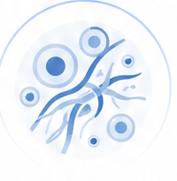

多维分子整合
整合甲基化、突变、拷贝数变异等多维分子特征，全面刻画肿瘤分化状态。
安康御癌专项评估健康管理报告 | 05/11
CDA（Cancer Differentiation Analysis，癌症分化分析）结果需结合本次疾病风险分层、核心参数状态与临床背景做综合判断，不能单独替代临床诊疗结论。
整合甲基化、突变、拷贝数变异等多维分子特征，全面刻画肿瘤分化状态。
基于大规模肿瘤样本训练的深度学习模型，精准识别分化相关分子模式。
输出0-100的CDA评分，分数越高提示分化越好，肿瘤行为越接近惰性。
与临床预后显著相关，为治疗决策与随访策略提供重要参考。
肿瘤的发展是一个从分子层面异常，逐步演化为细胞形态改变，最终在影像学上可见的连续过程。
DNA甲基化异常、基因突变、拷贝数变异等分子事件发生。
正常细胞分化程序被打乱，细胞极性、结构与功能发生改变。
细胞异常增殖，组织结构紊乱，基底膜破坏，间质反应出现。

微环境信号肿瘤与微环境相互作用，促进血管生成、免疫逃逸等。
肿瘤体积增大、边界改变、转移灶出现，最终在影像学上可见。
结合本次 CDA 结果、五癌甲基化筛查和后续 CTC 动态监测，可更早识别需要重点随访的人群，并为阶段性健康管理与复测安排提供参考。
AI提示：核心指标解读应与既往病史、症状、甲基化筛查结果和后续 CTC 监测趋势联合阅读。